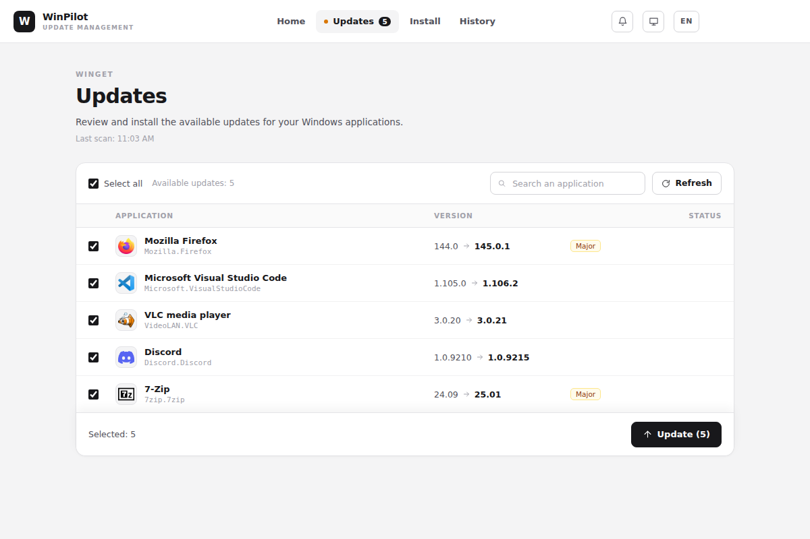

Your Windows apps,
always up to date.
WinPilot finds updates for your software and installs them for you with winget, no command line needed.
Download for Windows
Everything you need, nothing more
Update everything
See what has a new version, then update it all or only what you tick.
99 apps a click away
A catalog in 12 categories, plus winget search to find the rest.
Quiet in the background
WinPilot can stay in the notification area, check on its own and let you know.
You stay in control
Ignore an app or a version, and review the history of operations.
No account, no telemetry
No sign-up, and WinPilot sends no usage statistics.
Light, dark, English, French
The interface follows your Windows theme and comes in two languages.
A look at the app
Updates
The installed version, the new one, and major changes flagged. Tick, start, done.

Install
Tick the apps you want: WinPilot installs them one after another, without asking questions.

History
Every update, install and uninstall stays on record.

Screenshots taken with sample data.
Download WinPilot
Download the installer- Run the downloaded WinPilot-Setup file.
- Follow the installer.
- WinPilot scans your apps. Later versions then offer themselves on their own.
The installer is not signed, so Windows SmartScreen may show a warning. If it does, click More info, then Run anyway.